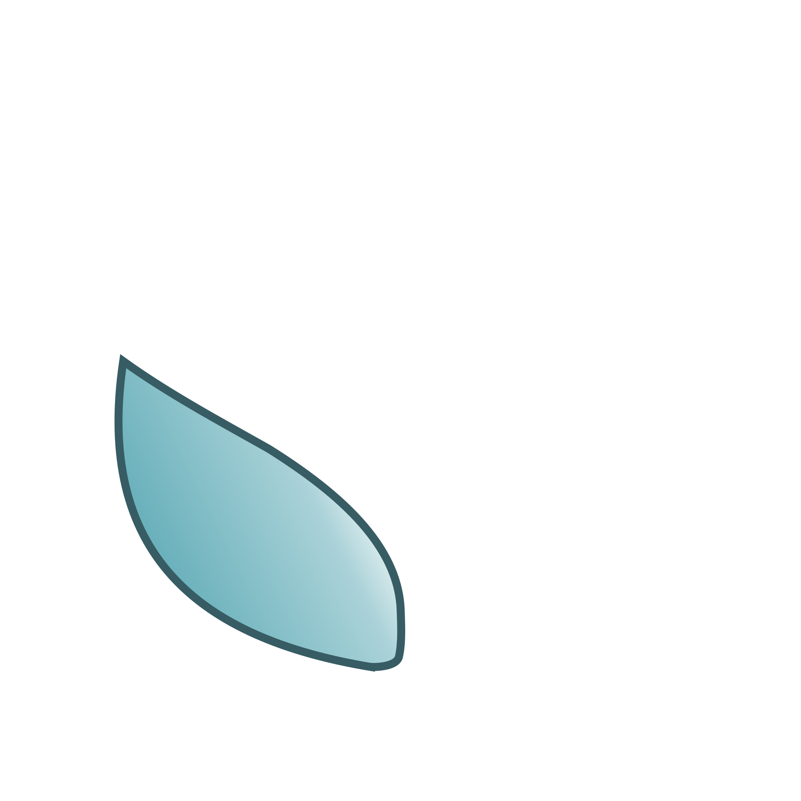
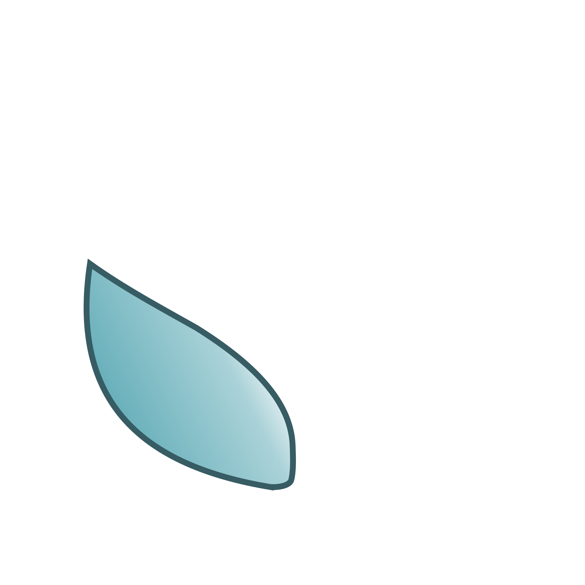

Srebrna szybka per canto
I Ogólnopolski Konkurs Wokalny
Srebrna Szybka per canto
 



Opis konkursu
Srebrna Szybka to konkurs z wieloletnią tradycją realizowany przez Szkołę Muzyczną I i II st. im. Bronisława Rutkowskiego w Krakowie, przeznaczony dla młodych instrumentalistów i kompozytorów. Ma on na celu propagowanie współczesnych trendów, technik kompozytorskich i wykonawczych.
W bieżącym roku szkolnym zapraszamy do przygody z muzyką XX i XXI wieku również wokalistów! Specjalnie z myślą o młodych śpiewakach organizujemy I Ogólnopolski Konkurs Wokalny – Srebrna Szybka per canto.
Do udziału w Konkursie zapraszamy solistów, uczniów klas wokalnych szkół muzycznych oraz zespoły wokalne składające się z uczniów szkół I lub II stopnia.
Na konkursie należy zaprezentować utwory kompozytorów urodzonych po 1880 r., mogą być one bardzo awangardowe lub postromantyczne, zachęcamy też do sięgnięcia po musical! Konkurs jest dwuetapowy – pierwszy etap będzie miał formę zdalną (nagrania należy przesłać do 15.12.2021 r.), drugi planowany jest stacjonarnie (w zależności od sytuacji epidemicznej) na dzień 11.01.2022 r..
Zapraszamy do zapoznania się z Regulaminem.
Czekamy na Państwa w naszej sali koncertowej.
Kalendarz I Ogólnopolskiego Konkursu Wokalnego Srebrna Szybka per canto
-
01.10.2021
Ogłoszenie konkursu Srebrna Szybka per canto.
-
01.12.2021
Otwarcie dokonywania wpłat za udział w konkursie.
-
10.12.2021
Zakończenie wysyłania zgłoszeń i oświadczeń oraz zamknięcie dokonywania wpłat.
-
15.12.2021
Zakończenie wysyłania nagrań.
-
16.12.2021
Umieszczenie na stronie listy uczestników.
-
20.12.2021
Ocena nagrań nadesłanych do I etapu przez Jury.
-
21.12.2021
Ogłoszenie na stronie listy zakwalifikowanych do II etapu.
-
05.01.2022
Ostateczny termin zamieszczenia na stronie kolejności przesłuchań uczestników
zakwalifikowanych do II etapu.
-
11.01.2022
Przesłuchania II etapu Konkursu w Sali
Koncertowej Szkoły Muzycznej I i II st. im. Bronisława Rutkowskiego w Krakowie.
-
11.01.2022
Wieczorem ogłoszenie wyników Konkursu oraz koncert laureatów w Sali Koncertowej
Szkoły Muzycznej I i II st. im. Bronisława Rutkowskiego w Krakowie.
-
01.10.2021
Ogłoszenie konkursu Srebrna Szybka per canto.
-
01.12.2021
Otwarcie dokonywania wpłat za udział w konkursie.
-
10.12.2021
Zakończenie wysyłania zgłoszeń i oświadczeń oraz zamknięcie dokonywania wpłat.
-
15.12.2021
Zakończenie wysyłania nagrań.
-
16.12.2021
Umieszczenie na stronie listy uczestników.
-
20.12.2021
Ocena nagrań nadesłanych do I etapu przez Jury.
-
21.12.2021
Ogłoszenie na stronie listy zakwalifikowanych do II etapu.
-
05.01.2022
Ostateczny termin zamieszczenia na stronie kolejności przesłuchań uczestników zakwalifikowanych do II etapu.
-
11.01.2022
Przesłuchania II etapu Konkursu w Sali Koncertowej Szkoły Muzycznej I i II st. im. Bronisława Rutkowskiego w Krakowie.
-
11.01.2022
Wieczorem ogłoszenie wyników Konkursu oraz koncert laureatów w Sali Koncertowej Szkoły Muzycznej I i II st. im. Bronisława Rutkowskiego w Krakowie.
Dokumenty
Pozostałe informacje
Skrzynka mailowa konkursu:
srebrna.szybka.per.canto@sm1krakow.eu
Numer konta szkoły:
Bank PKO BP S.A. 20 1020 2892 0000 5602 0591 0981
Adres:
Szkoła Muzyczna I i II Stopnia
ul. Józefińska 10
30-529 Kraków
Tel./fax: +48 12 656 09 45
Tel.: +48 12 656 06 96
sekretariat@sm1krakow.pl
dyrekcja@sm1krakow.pl
Strona internetowa